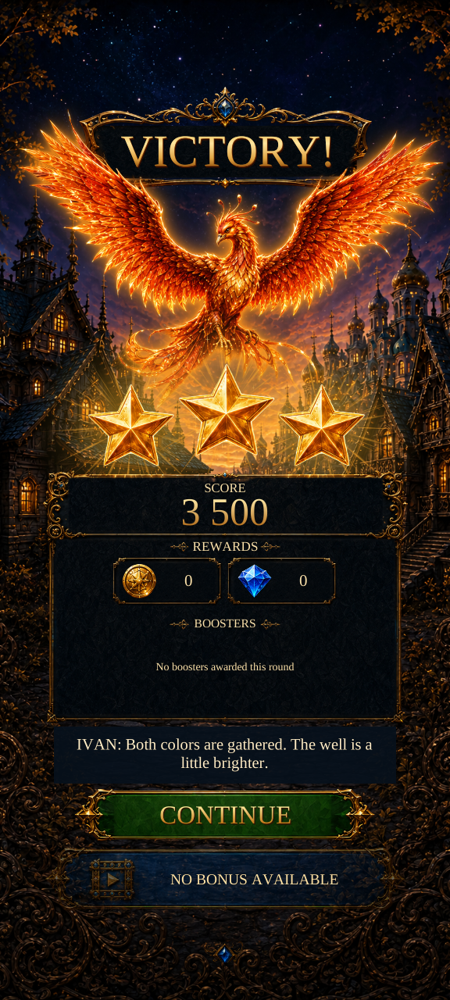

Victory caption readability
Actual Unity captures. Captions now wrap in a dedicated area above Continue, using 34 reference-pixel text instead of 14. Existing art, wording and actions are retained.

Service-result fixtures and simulated displays; these are not device screenshots or manual gameplay results. Images display at native pixel size when space permits.
Test results and limits